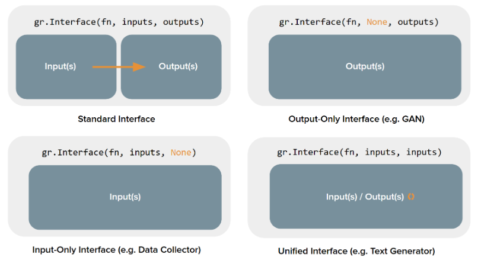

17. Introducción a gradio.#
En el emocionante mundo de la inteligencia artificial, desarrollar aplicaciones que interactúen de manera efectiva con los usuarios es crucial. Gradio se destaca como una herramienta revolucionaria que simplifica la creación de interfaces de usuario intuitivas y atractivas para modelos de aprendizaje automático. Con Gradio, puedes llevar tus proyectos de IA al siguiente nivel, permitiendo a tus usuarios interactuar con tus modelos de manera sencilla y visual. Ya sea que estés trabajando en reconocimiento de imágenes, procesamiento de lenguaje natural o cualquier otro campo de la IA, Gradio te brinda la flexibilidad y la potencia necesarias para crear experiencias de usuario excepcionales. ¡Descubre cómo Gradio puede transformar tus aplicaciones de IA y llevarlas al siguiente nivel!
Una de las ventajas clave de Gradio es su capacidad para permitir a los desarrolladores crear interfaces de usuario personalizadas y adaptadas a sus necesidades específicas. Con una variedad de componentes y herramientas disponibles, puedes diseñar interfaces que se ajusten perfectamente a tus objetivos y requisitos. Además, Gradio se integra perfectamente con populares frameworks de aprendizaje automático como PyTorch y TensorFlow, lo que te permite aprovechar al máximo tus modelos y llevar tus aplicaciones de IA a la vida real de manera rápida y eficiente.
En este apartado se van a mostrar los elementos más básicos de gradio, para que el lectorpueda tomar el impulso necesario y que después pueda ir ampliando conocimientos de forma autónoma, y para ello lo que se hace es en el apéndice de este tema, incluir algunos enlaces que pueden ser muy útiles para poder adquirir y ampliar este tipo de conocimientos.
Comencemos por decir que como siempre en python, lo primero que hay que hacer es instalarse la librería que nos permita trabajar con este paquete. Para ello debemos ejecutar el siguiente comando:
pip install gradio
#!pip install gradio
Para entrando e materia, lo primero es mostrar un sencillo ejemplo, de tipo ¡¡¡Hola mundo!!! para que se pueda ir apreciando la sencillez de gradio a la hora mostrar contenidos. Vayamos a eso y ejecutemos el código siguiente que después se explicará lo que hace
import gradio as gr
def greet(name, intensity):
return "Buenas, " + name + "!" * int(intensity)
demo = gr.Interface(
fn=greet,
inputs=["text", "slider"],
outputs=["text"],
)
demo.launch()
D:\MisTrabajos\IA_generativa\venv\Lib\site-packages\tqdm\auto.py:21: TqdmWarning: IProgress not found. Please update jupyter and ipywidgets. See https://ipywidgets.readthedocs.io/en/stable/user_install.html
from .autonotebook import tqdm as notebook_tqdm
* Running on local URL: http://127.0.0.1:7860
To create a public link, set `share=True` in `launch()`.
Como puede verse de una forma bien simple y con muy pocos líneas de código, obtenemos un resultado muy positivo. A continuación se procede a explicar lo que hace cada línea del código.
Lo primero que se hace es definir un función que toma como entradas el/los valores que se le mandan desde la sección que se va a indicar posteriormente, y devuelve el valor que se va a mostrar en el output de la interfac que a continuación se pasa a explicar.
En la línea 6 es donde se define la interface , la cual es uno de los elementos más importantes de gradio, con la cual se puede crear una GUI/demo basada en un determinad modelo de aprendizaje automático (o cualquier otro tipo de código Python) con pocas líneas de código.
En esta interface se deben al menos los siguientes parámetros:
fn. Es la función a la que se llama y que nos devuelve los valores que se mostrarán después en el output.
inputs. Son los componentes de entrada que necesitemos.
outputs. Son los componentes de salida deseados.
Tan sólo con este simple conocimiento, ya se puede definir una página web donde podemos interactuar con el modelo. Hay que tener en cuenta que además de esos tres parámetros, esta interface cuenta con muchos más parámetros con los cuales podemos mejorar las presentaciones. Para mostrar esto, vamos a modificar ligeramente el ejemplo anterior, para mejorar la presentación.
import gradio as gr
def greet(name, intensity):
return "Buenas, " + name + "!" * int(intensity)
demo = gr.Interface(
fn=greet,
inputs=[gr.Textbox(label="Nombre y apellidos"), gr.Slider(minimum=2,maximum=10,label="N. repeticiones")],
outputs=["text"],
)
demo.launch()
* Running on local URL: http://127.0.0.1:7861
To create a public link, set `share=True` in `launch()`.
Expliquemos a continuación los cambios que hemos hecho en la presentación anterior. En la linea 8 y para el parámetro inputs, lo que se ha hecho es sustituir la expresión “text”, por el componente concreto, que en su caso es Textbox y se le ha añadido el parámetro labe con un valor igual al que aparece encima de dicho campo cuando se muestra este campo. Algo similar se ha hecho cambiando la expresión “slider” por gr.slider. Todos los parámetros que admiten los componentes, se pueden encontrar en la documentación de gradio, por ejemplo los parámetros de este último componente los podemos encontrar en este enlace .
Si su función acepta más de un argumento, como en el caso anterior, pase una lista de componentes de entrada a inputs, donde cada componente de entrada corresponda a uno de los argumentos de la función, en orden. Lo mismo aplica si su función devuelve más de un valor: simplemente pase una lista de componentes a outputs. Esta flexibilidad convierte a la clase Interface en una herramienta muy eficaz para crear demostraciones.
La salida anterior también la podemos ver en nuestro ordenador local, sin más que poner en un navegador la siguiente dirección: http://localhost:7860.
También se puede hacer esta salida como pública, de tal manera que pueda ser vista fuera del ordenador local, para lo cual se debe poner el parámetro share=True en el método launch().
17.1. Más entornos para mostrar elementos.#
No sólo se puede utilizar la interface para hacer estas presentaciones, pues gradio ofrece otras herramientas interesantes para ello.
Se pueden crear Demos a medida con gr.Blocks con los cuales se pueden diseñar aplicaciones web con diseños y flujos de datos más personalizables y de esta manera y entre otras cosas, controlar la ubicación de los componentes en la página, gestionar múltiples flujos de datos e interacciones más complejas (por ejemplo, las salidas pueden servir como entradas para otras funciones) y actualizar las propiedades y la visibilidad de los componentes según la interacción del usuario. Gracias a estas facilidades, se puede construir la popular herramienta de generación de imágenes Automatic1111 .
17.2. Chatbots con gr.ChatInteface.#
Gradio, también son ofrece esta clase, diseñada específicamente para crear interfaces de usuario para chatbots. Al igual que en Interface, proporcionas una función y Gradio crea una interfaz de usuario para chatbot completamente funcional.
17.3. Gradio Sketch.#
También se pueden crear aplicaciones Gradio sin escribir código. Simplemente escribe gradio sketchen en tu terminal para abrir un editor que te permite definir y modificar componentes Gradio, ajustar sus diseños y añadir eventos, todo mediante un editor web. También puedes usar esta versión alojada de Gradio Sketch, que se ejecuta en Hugging Face Spaces .
17.4. La componentes de Gradio.#
Gradio contiene más de 30 componentes para poder crear los elementos visuales de las página web que se pueden crear con él.Estas componentes se pueden usar como inputs o como outputs en los diseños creados por el usuario. Estas componentes, se pueden ver en este enlace .
Todas estas componentes tienen una serie de atributos que permiten particularizarlas de acuerdo a las necesidades de los usuarios y así conseguir con muy poco esfuerzo las necesidades puntuales de cada uno.
Veamos el siguiente ejemplo, que nos muestra como deben estar estructuradas las componentes de la interface, y en concreto la lista de inputs y la lista de outputs:
import gradio as gr
def greet(name, is_morning, temperature):
salutation = "Buenos días" if is_morning else "Buenas tardes"
greeting = f"{salutation} {name}. La temperatura es de {temperature} grados hoy"
celsius = (temperature - 32) * 5 / 9
return greeting, round(celsius, 2)
demo = gr.Interface(
fn=greet,
inputs=["text", "checkbox", gr.Slider(0, 100)],
outputs=["text", "number"],
)
demo.launch()
* Running on local URL: http://127.0.0.1:7862
To create a public link, set `share=True` in `launch()`.
Como puede observarse en el ejemplo anterior, el número de elementos de la lista inputs debe de coincider con el número de parámetros de la función a la que se llama, y el número de elementos de la lista outputs debe de coincidir con los valores que devuelve la función a la que se llama. Ello es así puesto que los parámetros de entrada de la función son los valores (y en ese orden) que se pasa en la lista de inputs. Igual consideración hay que hacer para los valores de outputs.
También existe la posibilidad de añadir inputs adicionales incluidos éstos dentro de un componente en forma de acordeón. Esto lo podemos ver en el siguiente ejemplo:
import gradio as gr
def generate_fake_image(prompt, seed, initial_image=None):
return f"Used seed: {seed}", "https://dummyimage.com/300/09f.png"
demo = gr.Interface(
generate_fake_image,
inputs=["textbox"],
outputs=["textbox", "image"],
additional_inputs=[
gr.Slider(0, 1000),
"image"
]
)
demo.launch()
* Running on local URL: http://127.0.0.1:7863
To create a public link, set `share=True` in `launch()`.
17.5. Estado de la Interface.#
Todos los ejemplos que se han visto hasta ahora se han hecho de tal manera que los resultados no tienen estado, es decir que los resultados obtenidos no persiste más allá de la ejecución puntual que realicemos. Pero en muchas ocasiones lo que se necesita es persistir ese valor para poder interactuar con otros resultados, de ahí la necesidad de poder guardar o persitir determinados resultados. En Gradio, existen dos enfoques para conseguir esto: estado global y estado de sesión.
17.5.1. Estado global.#
Si se quiere que el estado debe ser accesible para todas las llamadas a funciones y todos los usuarios, puede crear una variable fuera de la llamada a la función y acceder a ella dentro de esa función. Por ejemplo, puede cargar un modelo grande fuera de la función y usarlo dentro de ella para que cada llamada a la función no tenga que recargarlo.
Veamos un ejemplo:
import gradio as gr
scores = []
def track_score(score):
scores.append(score)
top_scores = sorted(scores, reverse=True)[:3]
return top_scores
demo = gr.Interface(
track_score,
gr.Number(label="Score"),
gr.JSON(label="Top Scores")
)
demo.launch()
* Running on local URL: http://127.0.0.1:7864
To create a public link, set `share=True` in `launch()`.
En este ejemplo , la matriz scores se comparte entre todos los usuarios (tener en cuenta que se ha definido fuera de la función que llama la interface). Si varios usuarios acceden a esta demostración, sus puntuaciones se añadirán a la misma lista y las 3 puntuaciones más altas se recopilarán de esta referencia compartida.
17.5.2. Estado de sesión.#
Otro tipo de persistencia de datos compatible con Gradio es el estado de sesión, donde los datos persisten tras múltiples envíos dentro de una sesión de página. Sin embargo, los datos no se comparten entre los diferentes usuarios del modelo. Para almacenar datos en un estado de sesión, debe realizar tres pasos:
1.- Pase un parámetro adicional a su función, que representa el estado de la interfaz. 2.- Al final de la función, devuelve el valor actualizado del estado como un valor de retorno adicional. 3.- Agregue los componentes ‘state’de entrada y ‘state’ salida al crear suInterface
Veamos a continuación una pequeña muestra de cómo operar con sesiones de estado
import gradio as gr
def store_message(message: str, history: list[str]):
output = {
"Current messages": message,
"Previous messages": history[::-1]
}
history.append(message)
return output, history
demo = gr.Interface(fn=store_message,
inputs=["textbox", gr.State(value=[])],
outputs=["json", gr.State()])
demo.launch()
* Running on local URL: http://127.0.0.1:7865
To create a public link, set `share=True` in `launch()`.
Observar cómo el estado persiste en todos los envíos dentro de cada página, pero si carga esta demostración en otra pestaña (o actualiza la página), las demostraciones no compartirán el historial de chat. En este caso, no pudimos almacenar el historial de envíos en una variable global; de lo contrario, se mezclaría entre los diferentes usuarios.
17.6. Tipos de interfaces.#
Gradio soporta cuatro tipos de interfaces:
1.- Interface estándar: que tienen entradas y salidas independientes (son las que hemos visto en los ejemplos anteriores).
2.- Interfaces de solo salida: que no toman ninguna entrada pero producen en la salida.
3.- Interfaces de solo entrada: que no producen ninguna salida pero sí aceptan algún tipo de entrada.
4.- Interfaces unificadas: que tienen componentes de entrada y salida, pero estos son los mismos . Esto significa que la salida generada anula la entrada (por ejemplo, un modelo de autocompletado de texto)

17.7. Construcción con bloques.#
Al trabajar con bloques podemos conseguir presentaciones más personalizadas que las que se obtienen utilizando las interfaces descritas en los apartados anteriores. Con estas herramientas podemos conseguir una disposición de los elementos de la página web a nuestra mediad, pero hay que tener en cuenta que por defecto, Gradio los coloca de forma vertical. Veamos a continuación un ejemplo introductorio.
import gradio as gr
def greet(name):
return "Hola " + name + "!"
with gr.Blocks() as demo:
name = gr.Textbox(label="Nombre")
output = gr.Textbox(label="Salida generada")
greet_btn = gr.Button("Adelante !!!")
greet_btn.click(fn=greet, inputs=name, outputs=output, api_name="greet")
demo.launch()
* Running on local URL: http://127.0.0.1:7866
To create a public link, set `share=True` in `launch()`.
Como puede verse, en este tipo de composiciones, los elementos a mostrar se inluyen de un bloque y después y dependiendo de la estrutura en la presentación que se quiera dar, se muestran de una u otra forma.
Con una estructura de código más moderna, se pueden utilizar decoradores que agilizan la estructura del código. Veamos el mismo ejemplo de antes, pero con este nuevo elemento
import gradio as gr
with gr.Blocks() as demo:
nombre = gr.Textbox(label="Nombre")
salida = gr.Textbox(label="Salida generada")
greet_btn = gr.Button("Adelante !!!")
@greet_btn.click(inputs=nombre, outputs=salida)
def greet(name):
return "Hola " + name + "!"
demo.launch()
* Running on local URL: http://127.0.0.1:7867
To create a public link, set `share=True` in `launch()`.
17.8. Trabajar con eventos.#
Los eventos son una parte muy importante de cualquier lenguaje de programación, y en este sentido Gradio cuenta con los eventos suficientes como para poder ofrecer al usuario todos aquellos que necesite a la hora de realizar sus presentaciones web.
En los ejemplos anteriores hemos visto, como incorporar el evento click para un botón, pero existen muchos más eventos para la mayor parte de los componentes. Estos eventos vienen descritos en la documentación oficial de Gradio, para cada componente.
Podemos poner como otro ejemplo la interacción de un campo de texto con el usuario, de tal manera que cuando se detecte algún cambio en el campo de texto se haga algo. Para hacer esto utilizamos el evento change().
import gradio as gr
def welcome(name):
return f"Bienvenido a mi web, {name}!"
with gr.Blocks() as demo:
gr.Markdown(
"""
# Hola!
Comienza a escribir el output!.
""")
inp = gr.Textbox(placeholder="Cual es tu nombre?")
out = gr.Textbox()
inp.change(welcome, inp, out)
demo.launch()
* Running on local URL: http://127.0.0.1:7868
To create a public link, set `share=True` in `launch()`.
17.9. Apéndice.#
17.9.1. Otras herramienta Python#
Python nos ofrece además otros entornos para generar páginas web: